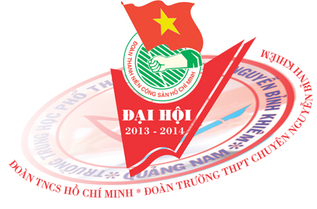

Đại hội đại biểu Đoàn TNCS Hồ Chí Minh trường THPT chuyên Nguyễn Bỉnh Khiêm

Lần cập nhật cuối lúc Thứ hai, 21 Tháng 10 2013 15:39 Viết bởi Administrator Thứ sáu, 18 Tháng 10 2013 09:26
Nhiệt liệt chào mừng quý vị đại biểu, quý thầy cô về tham dự đại hội đại biểu Đoàn TNCS Hồ Chí Minh, Trường THPT chuyên Nguyễn Bỉnh Khiêm, nhiệm kỳ 2013 - 2014

Thực hiện sự chỉ đạo của Đoàn cấp trên, được sự nhất trí của Chi ủy chi bộ, lãnh đạo nhà trường. Đoàn trường THPT chuyên Nguyễn Bỉnh Khiêm long trọng tổ chức Đại hội Đại biểu nhiệm kì 2013 - 2014. Đại hội diễn ra thành công tốt đẹp từ 14h30’ đến 18h30 chủ nhật ngày 18/ 10/2013.
Tới dự và chỉ đạo Đại hội có đ/c Mai Hồng Sanh - Bí thư thành đoàn TP Tam Kỳ, Đ/c Nguyễn Đình Tiến – Bí thư Chi bộ - Hiệu trưởng nhà trường, các đồng chí đại diện cho Công đoàn trường cô Hồ Thị Thúy Hằng chủ tịch công đoàn, Ông Nguyễn Hữu Đắc địa diện cho hội cha mẹ học sinh cùng quý thầy cô tổ chuyên môn, cùng 80 đoàn viên tiêu biểu đại diện cho 24 chi đoàn trong nhà trường. Đại hội còn nhận được sự quan tâm của các chi Đoàn trường bạn trên địa bàn thành phố Tam Kỳ như: Đoàn trường THPT Trần Cao Vân, THPT Lê Quí Đôn, THPT Phan Bội Châu, THPT Hà Huy Tập…
Đại hội đã được thông qua báo cáo tổng kết về công tác Đoàn và phong trào thanh niên nhiệm kì 2012-2013 và nhiệm vụ, phương hướng nhiệm kì 2013-2014. Có thể nói, trong năm qua Đoàn trường THPT chuyên Nguyễn Bỉnh Khiêm đã tiếp tục triển khai thực hiện có hiệu quả việc học tập và làm theo tấm gương đạo đức Hồ Chí Minh.
Năm học 2012 - 2013 diễn ra gắn liền với nhiều sự kiện chính trị quan trọng: Thi đua lập thành tích chào mừng Đại hội Đoàn các cấp, tiến tới Đại hội Đoàn toàn quốc lần thứ X; tiếp tục đẩy mạnh cuộc vận động học tập và làm theo tấm gương đạo đức Hồ Chí Minh; xây dựng “Trường học thân thiện, học sinh tích cực”.... Trên cơ sở phát huy kết quả hoạt động đoàn và phong trào thanh niên nhiệm kỳ 2012 – 2013 Năm học 2013 – 2014 với chủ đề: “Nâng cao hiệu quả công tác giáo dục và phong trào học sinh tình nguyện”, đây là năm học thứ 12 của Trường THPT chuyên Nguyễn Bỉnh Khiêm, phát huy truyền thống vẻ vang của các thế hệ ĐV - TN đi trước, từ những thành tích đạt được, những bài học kinh nghiệm trong hoạt động Đoàn và phong trào thanh niên trong nhiệm kỳ qua.
Căn cứ vào hướng dẫn thực hiện nhiệm vụ năm học của Sở GD&ĐT Quảng Nam và hướng dẫn của Ban chấp hành Thành Đoàn Tam Kỳ.
Đoàn trường THPT Chuyên Nguyễn Bỉnh Khiêm dưới sự chỉ đạo của tỉnh Đoàn Quảng Nam, thành đoàn Tam Kỳ; sự lãnh đạo, chỉ đạo của Chi bộ và BGH nhà trường BCH Đoàn trường thống nhất đề ra chương trình công tác Đoàn, phong trào thanh niên trường học năm học 2013-2014 cụ thể như sau:
- Giáo dục truyền thống, lý tưởng, đạo đức cách mạng cho ĐVTN, nâng cao nhận thức và chất lượng chính trị của ĐVTN. Đây là việc làm thương xuyên và xuyên suốt.
- Xây dựng môi trường thuận lợi, khơi dậy ý chí vượt khó trong học tập và rèn luyện, đặc biệt là phong trào thi đua học tập, nâng cao ý thức, thái độ học tập tích cực, hoài bảo, khát vọng nắm bắt tri thức mới.
- Tăng cường sự chỉ đạo của Đảng đối với công tác thanh niên.
- Xây dựng trường học thân thiện, học sinh tích cực.
- Nâng cao chất lượng cán bộ, đoàn viên, chi đoàn trong nhà trường và đẩy mạnh việc thực hiện chương trình rèn luyện đoàn viên trong thời kỳ mới. Bồi dưỡng Đoàn viên ưu tú giới thiệu cho Đảng. Mở rộng mặt trận đoàn kết tập hợp thanh niên, đẩy lùi các hiện tượng tiêu cực xảy ra trong trường học và bên ngoài xã hội đối với các ĐVTN.
- Tập trung triển khai học tập, quán triệt và thực hiện có hiệu quả cuộc vận động “Tuổi trẻ Quảng Nam học tập và làm theo tấm gương đạo đức Hồ Chí Minh”.
- Đẩy mạnh và nâng cao hiệu quả các phong trào hành động cách mạng của tuổi trẻ học đường, cụ thể hóa phong trào 5 xung kích – 4 đồng hành; nhất là phong trào dạy tốt – học tốt, rèn luyện tốt, sáng tạo trẻ, nghiên cứu khoa học, thắp sáng ước mơ, phong trào tình nguyện vì cuộc sống cộng đồng. Thực hiện tốt hơn nữa phong trào xây dựng “Trường học thân thiện, học sinh tích cực”, “ Mỗi thầy, cô giáo là một gương đạo đức, tự học và sáng tạo”. Tăng cường các hoạt động tư vấn, hướng nghiệp cho học sinh.
- Tập trung triển khai chương trình rèn luyện đoàn viên mới; Chú trọng thực hiện chương trình hành động nâng cao chất lượng đoàn viên; Thực hiện tốt chương trình “Thắp sáng ước mơ tuổi trẻ Việt Nam”
- Đảm bảo vai trò nòng cốt chính trị của tổ chức Đoàn đối với hội LHTN trong nhà trường.
Đại hội đã được nghe các ý kiến tham luận đến từ các chi đoàn về các vấn đề học tập cũng như và phát huy vai trò của cán bộ đoàn cơ sở.Đại hội đã tập trung thảo luận, đóng góp ý kiến để hoàn thiện Bản phương hướng đề ra mục tiêu, nhiệm vụ thực hiện trong nhiệm kỳ 2013-2014. Các đại biểu có nhiều ý kiến đóng góp hữu ích , mang tính thiết thực, những kinh nghiệm quý báu trong tổ chức hoạt động công tác Đoàn và phong trào thanh niên, góp phần đổi mới, nâng cao hiệu quả hoạt động của BCH Đoàn trường.
Đặc biệt, Đại hội đã được nghe kiến phát biểu, chỉ đạo của đồng chí Mai Hồng Sanh - Bí thư thành đoàn TP Tam Kỳ và đ/c Nguyễn Đình Tiến – Bí thư Chi bộ - Hiệu trưởng nhà trường. Các đại biểu đến dự đã thẳng thắn chỉ ra những tồn tại, hạn chế, nguyên nhân và rút ra bài học kinh nghiệm cho BCH Đoàn trường, đồng thời đã động viên, khích lệ và đặt nhiều kỳ vọng vào những bước tiến mới của Đoàn trường trong nhiệm kì mới.
Sau hơn 4 giờ đồng hồ làm việc khẩn trương với tinh thần trách nhiệm cao, Đại hội Đoàn trường THPT chuyên Nguyễn Bỉnh Khiêm năm học 2013 - 2014 đã bầu ra 15 đồng chí (trong đó 5 đồng chí chi đoàn viên giáo viên, 10 đồng chí chi đoàn của 3 khối lớp) có phẩm chất đạo đức, tri thức và năng lực công tác đoàn, tiêu biểu cho ý chí, nguyện vọng của đoàn viên thanh niên trong toàn trường tiếp tục gánh vác nhiệm vụ lãnh đạo công tác đoàn trong nhiệm kỳ 2013 - 2014.
BCH gồm các đồng chí:
|
Đại hội đại biểu Đoàn trường THPT chuyên Nguyễn Bỉnh Khiêm nhiệm kỳ 2013-2014 đã diễn ra thành công rực rỡ với sự xung kích, sáng tạo của các thành viên trong BCH. Đoàn trường tin tưởng sẽ ngày càng vững mạnh, đóng góp được nhiều hơn nữa vào sự thành công và phát triển chung trong các hoạt động giáo dục của nhà trường.
- 05/09/2014 00:00 - Trường THPT chuyên Nguyễn Bỉnh Khiêm tổ chức lễ kh…
- 15/03/2014 08:05 - Kết quả chung kết hùng biện Tiếng Anh tại trường T…
- 24/01/2014 11:42 - Kết quả kỳ thi học sinh giỏi quốc gia năm học 2014
- 08/12/2013 14:43 - Lịch kiểm tra học kỳ I năm học 2013-2014
- 05/12/2013 14:51 - Tổng hợp một số chuyên đề các môn chuyên của các t…
- 09/10/2013 13:58 - Kết quả thi chọn học sinh giỏi lớp 12 năm 2013-201…
- 22/08/2013 09:28 - Giao lưu cho những ngày sau
- 22/08/2013 09:16 - Lộc và những lựa chọn
- 04/07/2013 11:00 - DANH SÁCH TRÚNG TUYỂN VÀO TRƯỜNG THPT CHUYÊN NGUYỄ…
- 14/05/2013 21:24 - CÔNG ĐOÀN TRƯỜNG THPT CHUYÊN NGUYỄN BỈNH KHIÊM TH…